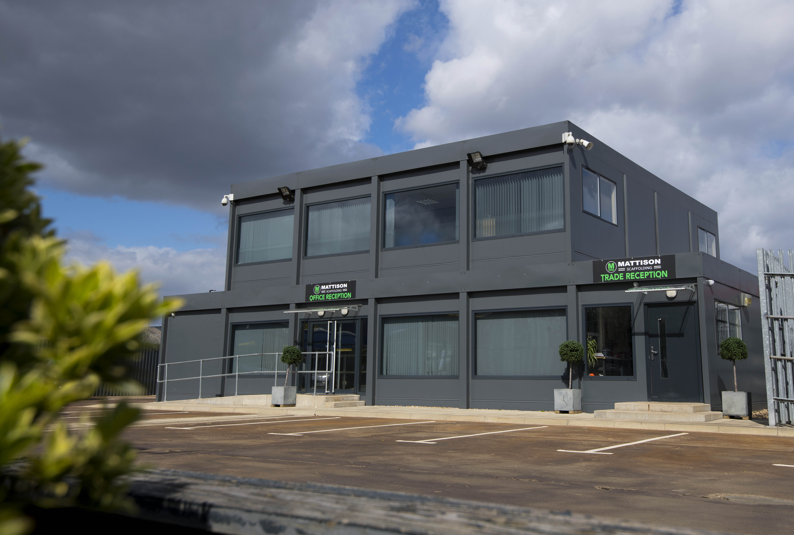

Профил
MBA (Distinction)
Anglia Ruskin University
Черен колан
Кикбокс
Логистичен мениджмънт
22 г. опит в UK
Семеен
С две деца
Европейска школа и завръщане
Роден в Русе през 1977 г., Росен Симеонов прекарва почти 20 години в Обединеното кралство. Професионалният му път в Лондон е пример за дисциплина и израстване – от работник в склад до Мениджър Логистика в една от най-големите частни компании в сектора.


През 2022 г. той избира да се върне в родния Русе със своето семейство. Воден от принципа, че правилата трябва да важат за всички, той влиза в обществения живот с амбицията да приложи наученото в чужбина за доброто на своя град.